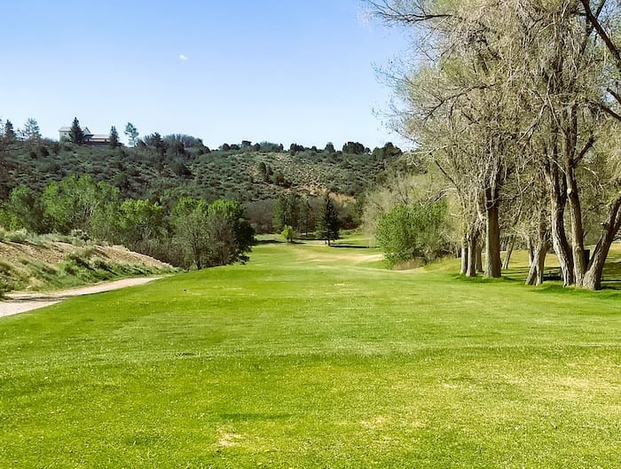
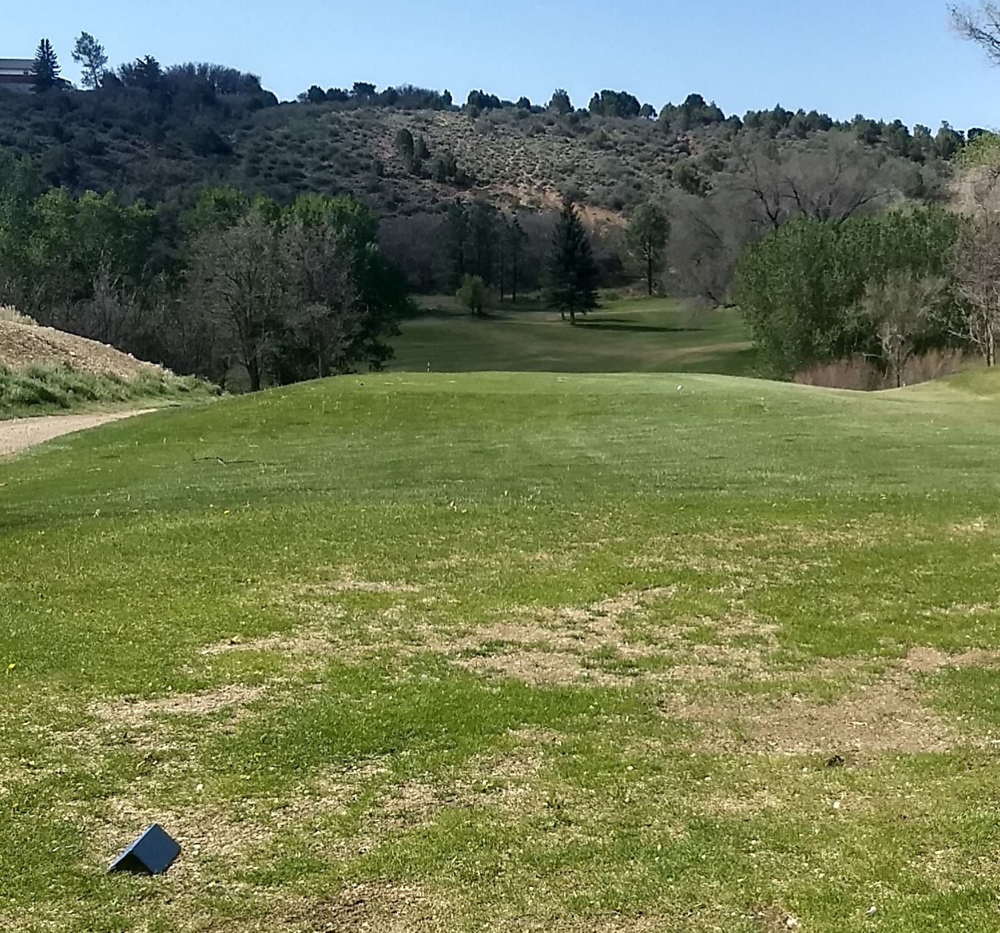
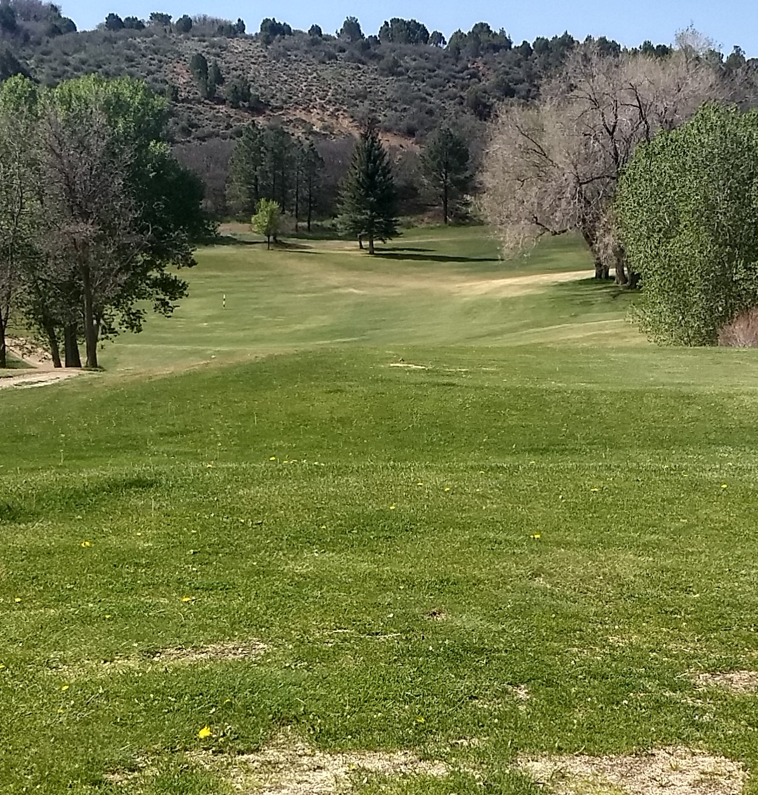
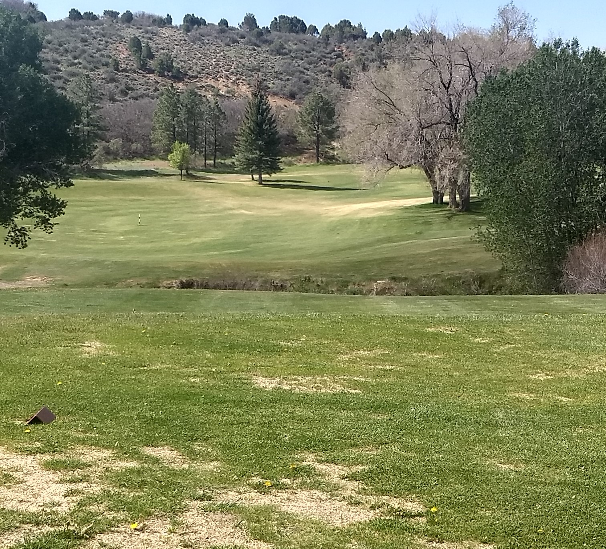
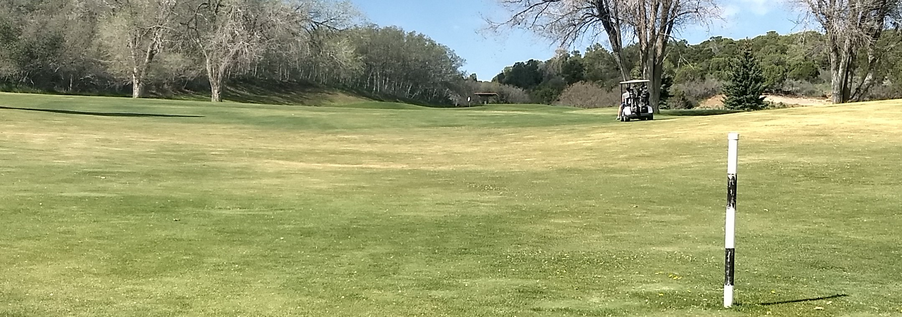
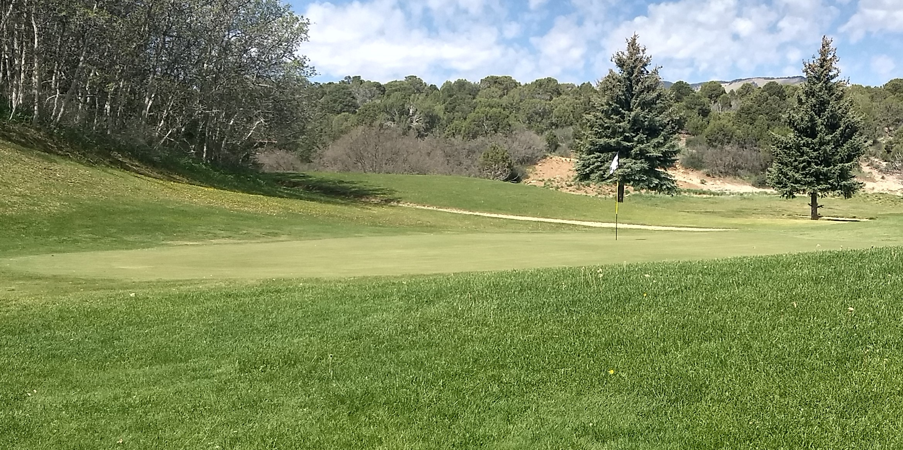
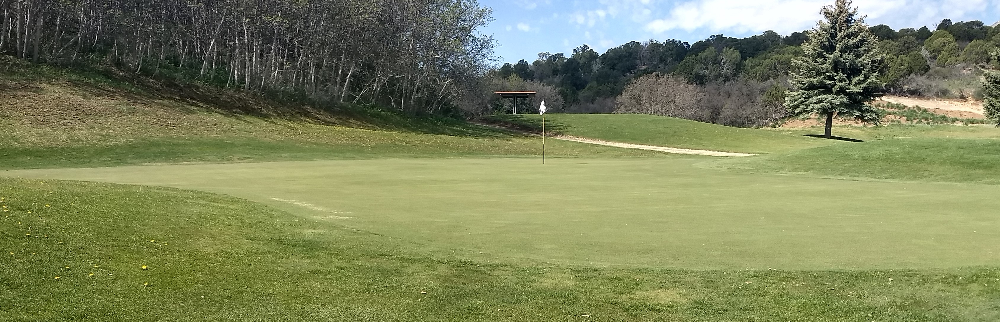
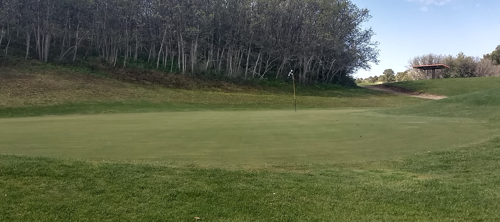

Hole #10
Hole Yardage
Tips
A very deep lateral ditch will not be a problem for most players. The green is a slight dogleg to the right, hidden behind a stand of tall cottonwoods. Landing the ball anywhere around the 150-yard marker is a reasonable drive, but a little further and to the right would be icing on the cake. Any shot towards the trees will almost certainly give you a bad lie. While the fairway does open up a little after the ditch, a hook or bad pull will probably mean your ball is lost. The driving range is on the right, so don't use a yellow ball!
Tee Box Views




Fairway and Approach Shot Info
Unless the lie is bad, there's nothing special about the approach shot. There is a forgiveness all around the green.

Green Info
Most players will find this to be an easy green.


